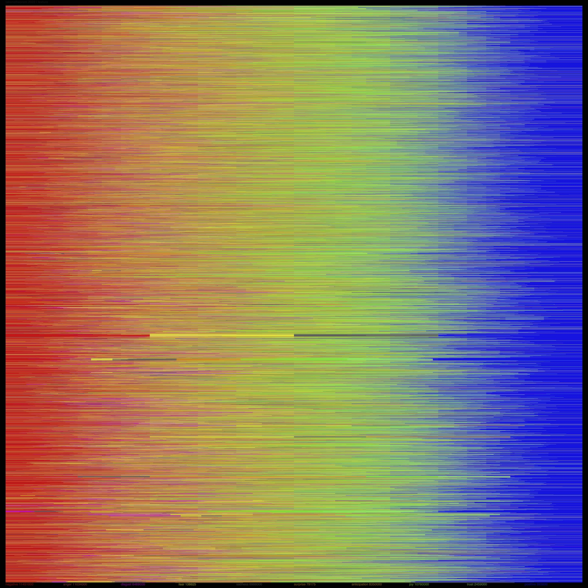
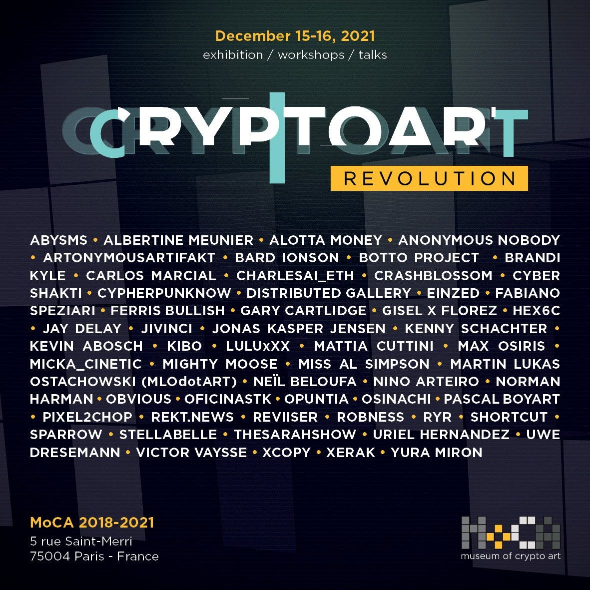

Recursive visual study of an ecosystem.
Takens 🏠
In 2022, I released 6 expressive data visualizations on KnownOrigin. It was a "recursive" project: visualizations of the platform itself. The visuals encapsulate some themes by analyzing thousands of data points drawn from on-chain data on KnownOrigin's own contracts. Each is shown below with a link to OpenSea because KnownOrigin, sadly, closed. I called the series "Reflective Recursion," echoing the core idea of self-referentiality: The pieces are based on the data from the platform on which the pieces themselves were released. Each asset is about 15,0002 JPEG with a lot of fine detail: zoom for some proof of data.
Why KnownOrigin? It illustrated that human communities, even highly technologized ones, remain richly social and thus organic in emergence and complexity. Our sociotechnical spaces remain very human ones, at least for now. In studying KnownOrigin and analyzing its data, some qualities of the platform concept struck me as worthy of some focus. A living, evolving cryptoart platform, recursive in more ways than one, meshwork of artists, collectors, coders, and curators.
KnownOrigin was built in spring 2018. Its birthplace is where modern computing was born, in Manchester, UK. KnownOrigin's founders recruited a group of diverse artists and their works, many of them in Manchester too. These contributors helped grow its earliest community. On KnownOrigin's first contract, dozens of artists produced just over 300 works. Those contributing artists are familiar names in cryptoart: Stina Jones, hex6c, Hackatao, oficinastk, Alina Loseva, Aktiv Protesk, Martin Lukas Ostachowski and more.
An interesting feature of KnownOrigin's history was its robust social community. This community was like a "scaffold" helping to build cryptoart culture. Artists supported artists. In the first year or two of KnownOrigin's existence, about a third of all art collecting was done by other artists. Some prominentartist collectors are shown on the right in "Creation" above (with their wallet's line indicated). In a general pattern of exchange, artists created and listed their works for modest sums, sometimes just $5. And often, other artists would devour these listings. Artists like Mattia Cuttini and Stina Jones and WGMeets and others were voracious collectors on early KnownOrigin.
Importantly: This community scaffold also involved major collectors. They include ModeratsArt, AAbranches, C34, WhaleShark, Redlioneye and many more including KnownOrigin's founders.
Despite the retirement of KnownOrigin itself, their scaffold still stands. Evidence for this is readily found on social media. You can follow Moxarra Gonzalez, artplusbrad, Bard Ionson, miss al simpson, Ernesto Asch and others. They share works in progress, and sometimes they descend into each other's threads to comment, encourage. You can also attend the weekly TheWIPMeetup. Amazingly, this weekly event has been held in the nascent metaverse mostly uninterrupted for many years. Some early KnownOrigin artists attend regularly with many others.
In late 2021, the MoCA "Cryptoart Revolution" event in France brought many of these artists together to celebrate these early days (some maybe meeting for the first time in person!). Organized by BnoiitC, the event illustrates the staying power of this community. Many KnownOrigin, SuperRare and other early cryptoartists attended.
For more of this history, check out my blog post here which includes an interface to explore old KOv1 pieces. Also see the many interesting discussions led by Martin Lukas Ostachowski.
